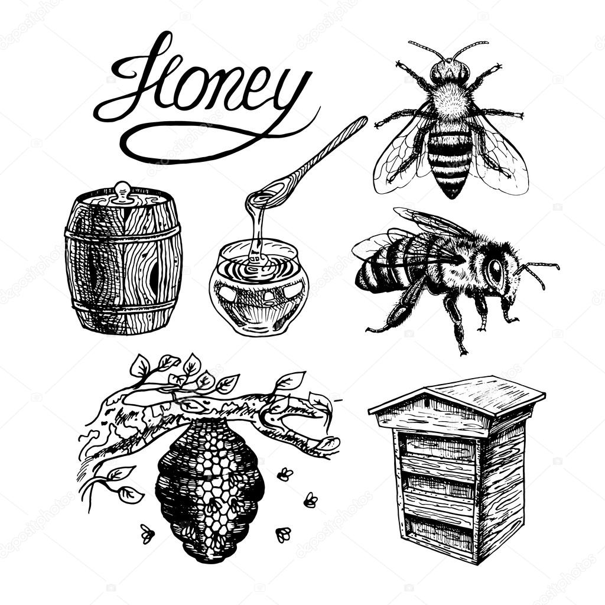

Mierea este o substanță alimentară dulce și vâscoasă produsă de albinele de miere și unele insecte înrudite. Albinele produc miere din secrețiile zaharoase ale plantelor (nectar floral) sau din secrețiile altor insecte (cum ar fi mierea). Albinele depozitează mierea în structuri de ceară numite faguri. Soiul de miere produs de albinele de miere (genul Apis) este cel mai cunoscut, datorită producției sale comerciale la nivel mondial și a consumului sau de catre oameni. Mierea este colectată din coloniile de albine sălbatice sau din stupii de albine domesticite, o practică cunoscută sub numele de apicultură.